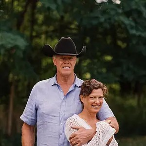
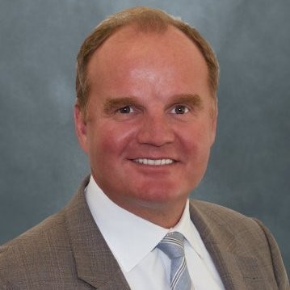
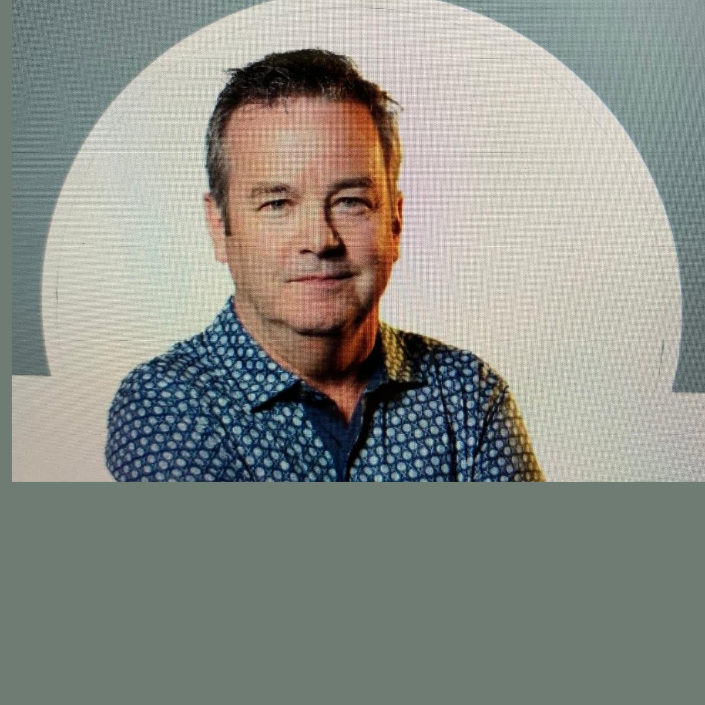
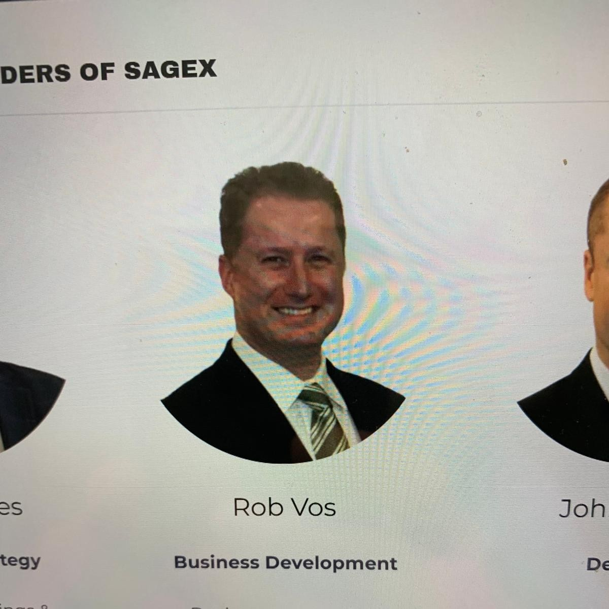
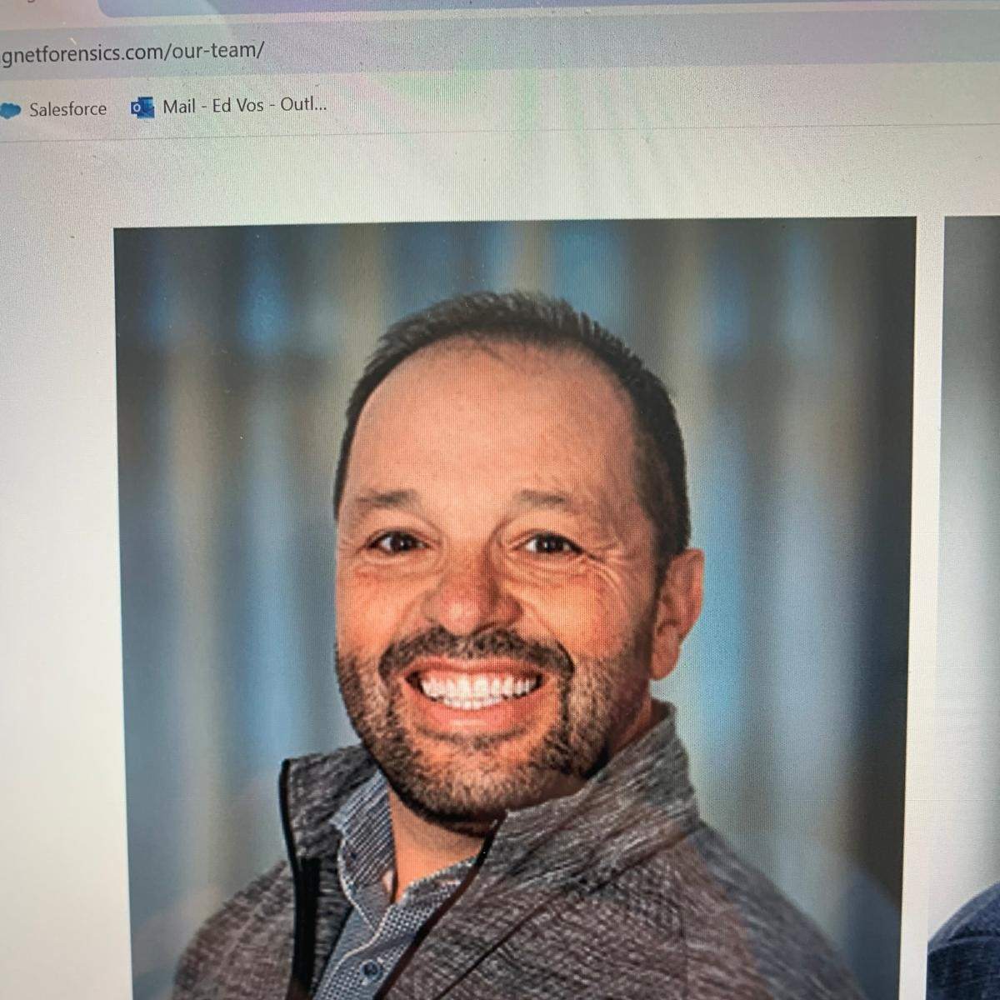
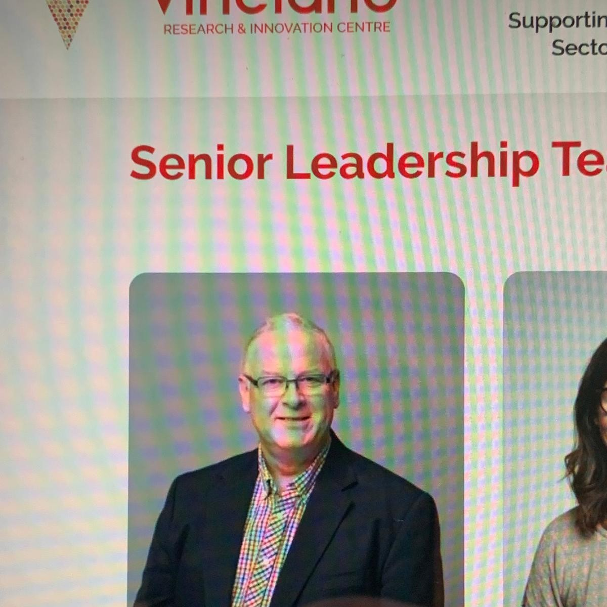

Leadership • Advisory • Expertise
Leadership

Strategic oversight and corporate governance

Company leadership, strategy

Financial management, operations oversight
Digital strategy, horticulture platform delivery, AI enablement
Advisors
AI optimization and technology strategy

Software license and managed services strategy
Financial and operational management strategy
Board


Extended Team
Our partner-driven model provides access to specialized talent across every layer of the technology stack.
BMP configuration and deployment
Delivery coordination and timeline management
Platform design and integration planning
Custom development and API integration
Requirements and process mapping
Infrastructure and ongoing support